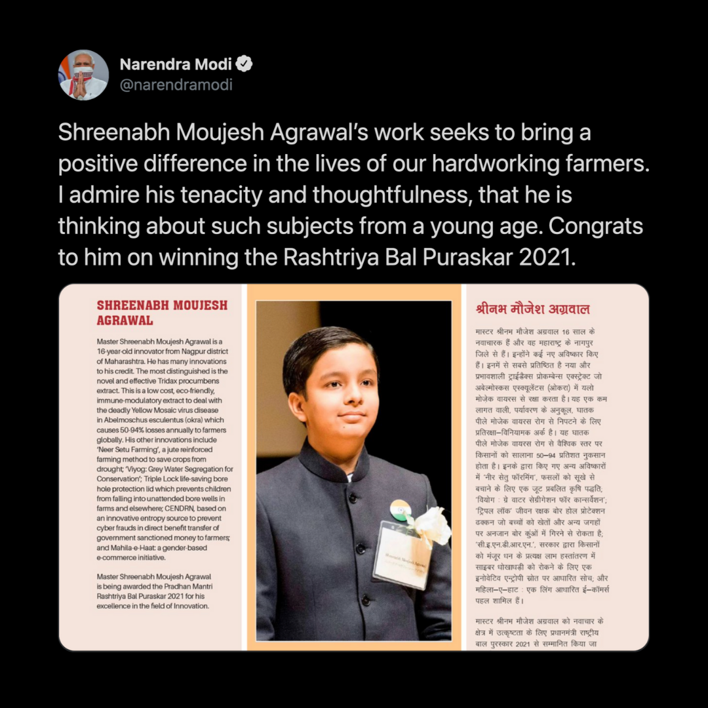

Pradhan Mantri Rashtriya Bal Puraskar
Recipient of Prime Minister's National Award for Children, India's highest civilian honour bestowed upon exceptional achievers under the age of 18 in the category of "Innovation".

Appreciation.
Shreenabh Moujesh Agrawal’s work seeks to bring a positive difference in the lives of our hardworking farmers. I admire his tenacity and thoughtfulness, that he is thinking about such subjects from a young age. Congrats to him on winning the Rashtriya Bal Puraskar 2021. pic.twitter.com/D2Ry3i66xP
— Narendra Modi (@narendramodi) January 25, 2021
Shreenabh Moujesh Agrawal is a 16-year-old innovator from Nagpur in Maharashtra. Among several of his innovations, low cost & eco-friendly Tridax procumbens extract helps farmers deal with the deadly Yellow Mosaic virus in Okra. #BalSamvadWithPM pic.twitter.com/BtjXoo6Xzc
— Smriti Z Irani (@smritiirani) January 25, 2021
I'm truly amazed by the outstanding accomplishments of these young achievers.
— Dr Harsh Vardhan (@drharshvardhan) January 25, 2021
A remarkable display of grit, determination & passion at such a young age & that too during a pandemic is highly commendable.#BalSamvadWithPM pic.twitter.com/5JpuMxMAhL